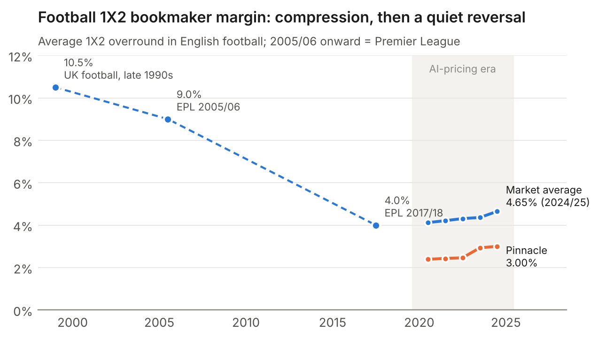

● NEW · OCT 2026
The Margin Paradox
How AI is reshaping bookmaker margins: sharper odds on single bets, far higher margins on bet builders, parlays and live markets.
4.65%EPL 1X2 margin
10.2%US hold 2025
20–35%UK bet builders

Exclusive partner
Betting analysis in exclusive partnership with wette.de.
↗ 2025 · 38 p↗Predictive Models
Predictive Analytics in Sports Betting
Models, ML & human behaviour patterns
2025 · 26 p↗Sports Analytics
German Football: Can Success Be Predicted?
Limits of forecasting in football
2025 · 26 p · DE↗Betting Analytics
Wettverhalten in Deutschland
Betting behaviour in an economic downturn
2024 · 24 p · DE↗Consumer Behavior
Konsumentenverhalten im LEH
Predictive intelligence in grocery retail
Chart of the month
Margin compression is over.
After two decades of falling bookmaker margins, Premier League 1X2 margins have risen every season since 2020/21. From “The Margin Paradox”.
